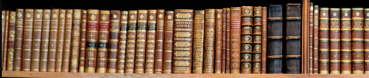

|
О Нашем проекте.
Электро́нная библиоте́ка — упорядоченная коллекция разнородных электронных документов (в том числе книг, журналов), снабжённых средствами навигации и поиска. Может быть веб-сайтом, где постепенно накапливаются различные тексты (чаще литературные, но также научные и любые другие, вплоть до компьютерных программ) и медиафайлы, каждый из которых самодостаточен и в любой момент может быть востребован читателем. Электронные библиотеки могут быть универсальными, стремящимися к наиболее широкому выбору материала (как Библиотека Максима Мошкова или Либрусек), и более специализированными, как Фундаментальная электронная библиотека или проект Сетевая Словесность, нацеленный на собирание авторов и типов текста, наиболее ярко заявляющих о себе именно в Интернете. На нашем сайте вы найдете и художественную литературу всемирно признанных авторов и научно-популярные статьи из большого количества областей науки.

Форматы, в которых книги доступны для скачивания с нашего сайта — заархивированный TXT, RTF и DOC, Mobipocket .PRC (формат для чтения книг на кпк и телефонах), FictionBook.
Дополнительно, материалы, изобилующие математическими формулами и сложными схемами, доступны в графическом формате, DjVu и PDF.
|